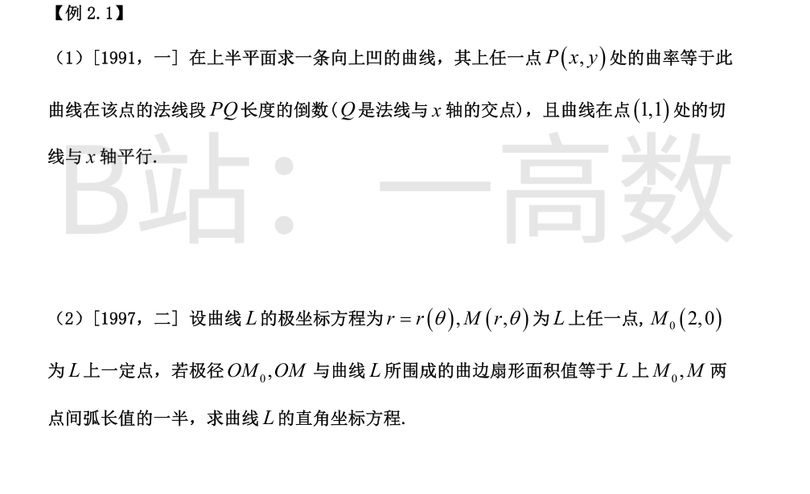
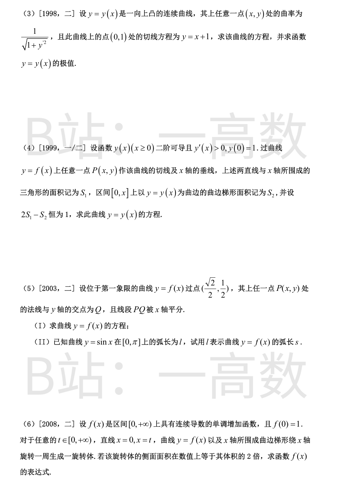
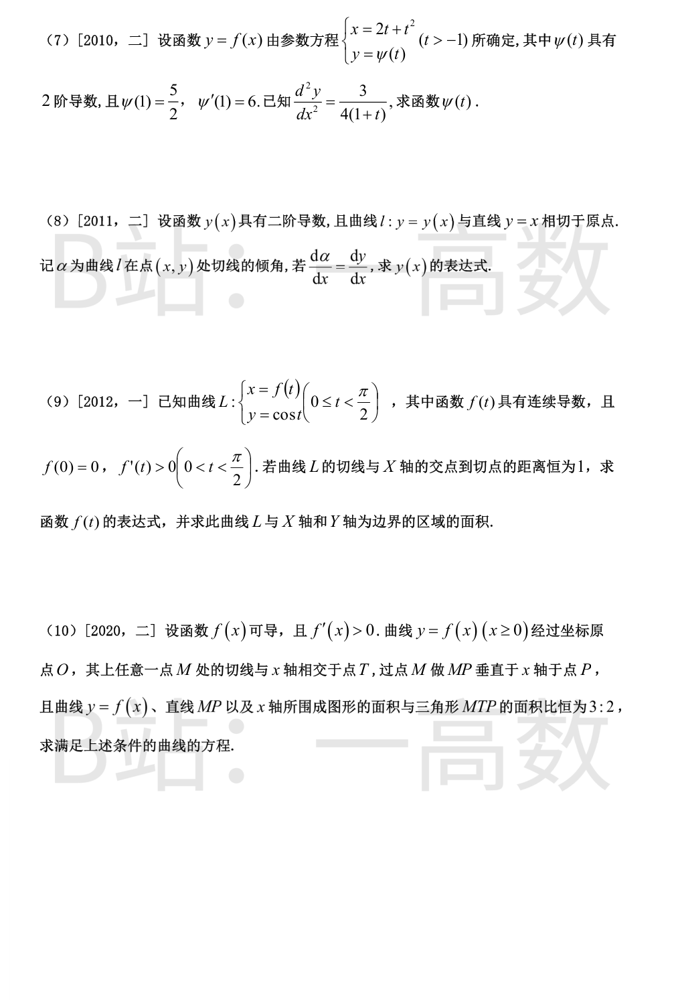

法线 Y-y=-\frac1{y'}(X-x) 交 x 轴于 Q(x+yy',\,0)，|PQ|=\sqrt{(yy')^2+y^2}=y\sqrt{1+y'^2}（y>0）。
向上凹 y''>0：K=\frac{y''}{(1+y'^2)^{3/2}}=\frac{1}{y\sqrt{1+y'^2}}，即
$$yy''=1+y'^2.$$
令 p=y'，y''=p\frac{\mathrm{d}p}{\mathrm{d}y}：yp\,\mathrm{d}p=(1+p^2)\mathrm{d}y，\frac{p\,\mathrm{d}p}{1+p^2}=\frac{\mathrm{d}y}{y}，\frac12\ln(1+p^2)=\ln y+C，1+p^2=C_1y^2。
(1,1) 处切线水平 p=0：C_1=1，故 1+y'^2=y^2，\frac{\mathrm{d}y}{\sqrt{y^2-1}}=\pm\mathrm{d}x，\ln\!\left(y+\sqrt{y^2-1}\right)=\pm x+C_2。
由 (1,1)：y+\sqrt{y^2-1}=e^{\pm(x-1)}，解得 y=\frac{1}{2}\left(e^{x-1}+e^{-(x-1)}\right)=\cosh(x-1)，验证 y''=\cosh(x-1)>0 ✓。
曲边扇形面积 A=\frac12\int_0^\theta r^2\,\mathrm{d}\theta，弧长 s=\int_0^\theta\sqrt{r^2+r'^2}\,\mathrm{d}\theta。由 A=\frac12 s 得
$$r^2=\sqrt{r^2+r'^2}\ \Longrightarrow\ r'^2=r^4-r^2=r^2(r^2-1),$$
取 \frac{\mathrm{d}r}{r\sqrt{r^2-1}}=\mathrm{d}\theta，即 \mathrm{d}\!\left(\arccos\frac1r\right)=\mathrm{d}\theta，积分 \arccos\frac1r=\theta+C。
由 r(0)=2：C=\arccos\frac12=\frac{\pi}{3}，故 \frac1r=\cos\!\left(\theta+\frac{\pi}{3}\right)，即 r\cos(\theta+\frac{\pi}{3})=1。
展开：\frac12x-\frac{\sqrt3}{2}y=1，得直线
$$x-\sqrt3\,y=2.$$
向上凸 y''<0：K=\frac{-y''}{(1+y'^2)^{3/2}}=\frac{1}{\sqrt{1+y'^2}}，即 -y''=1+y'^2。
令 p=y'：\frac{\mathrm{d}p}{1+p^2}=-\mathrm{d}x，\arctan p=-x+C；由 (0,1) 处 y'(0)=1 得 C=\frac{\pi}{4}，p=\tan\left(\frac{\pi}{4}-x\right)。
$$y=1+\int_0^x\tan\!\left(\frac{\pi}{4}-t\right)\mathrm{d}t=1+\left[\ln\cos\!\left(\frac{\pi}{4}-t\right)\right]_0^x=1+\frac12\ln2+\ln\cos\!\left(\frac{\pi}{4}-x\right).$$
定义域 \cos\left(\frac{\pi}{4}-x\right)>0，即 x\in\left(-\frac{\pi}{4},\frac{3\pi}{4}\right)。
令 y'=0：x=\frac{\pi}{4}；y''<0 恒成立，故为极大值：y\!\left(\frac{\pi}{4}\right)=1+\frac12\ln2。
切线 Y-y=y'(X-x) 交 x 轴于 \left(x-\frac{y}{y'},0\right)，S_1=\frac12\cdot\frac{y}{y'}\cdot y=\frac{y^2}{2y'}；S_2=\int_0^x y\,\mathrm{d}t。
2S_1-S_2=1：\dfrac{y^2}{y'}-\int_0^x y\,\mathrm{d}t=1。取 x=0：y'(0)=1。
求导：\frac{2yy'^2-y^2y''}{y'^2}=y，即 yy'^2=y^2y''，y''=\dfrac{y'^2}{y}。
令 p=y'：p\dfrac{\mathrm{d}p}{\mathrm{d}y}=\dfrac{p^2}{y}，\dfrac{\mathrm{d}p}{p}=\dfrac{\mathrm{d}y}{y}，p=Cy；p(0)=1,\ y(0)=1\Rightarrow C=1，\dfrac{\mathrm{d}y}{\mathrm{d}x}=y，y=e^x。
验证：\dfrac{e^{2x}}{e^x}-(e^x-1)=1 ✓。
(I) 法线 Y-y=-\frac1{y'}(X-x) 交 y 轴于 Q\left(0,\,y+\frac{x}{y'}\right)。PQ 中点纵坐标 \frac{1}{2}\left(y+y+\frac{x}{y'}\right)=0，得 2yy'=-x，即 (y^2)'=-x，y^2=C-\dfrac{x^2}{2}。
代入 \left(\frac{\sqrt2}{2},\frac12\right)：\frac14=C-\frac14，C=\frac12，故 x^2+2y^2=1，即 y=\sqrt{\dfrac{1-x^2}{2}}（0<x\le1）。
(II) 椭圆参数化 x=\cos t,\ y=\frac{1}{\sqrt2}\sin t：\mathrm{d}s=\sqrt{\sin^2t+\frac12\cos^2t}\,\mathrm{d}t=\frac{1}{\sqrt2}\sqrt{1+\sin^2t}\,\mathrm{d}t。
$$s=\frac{1}{\sqrt2}\int_0^{\pi/2}\sqrt{1+\sin^2t}\,\mathrm{d}t=\frac{1}{\sqrt2}\int_0^{\pi/2}\sqrt{1+\cos^2t}\,\mathrm{d}t=\frac{1}{\sqrt2}\cdot\frac{l}{2}=\frac{\sqrt2}{4}l,$$
其中利用 l=\int_0^{\pi}\sqrt{1+\cos^2x}\,\mathrm{d}x=2\int_0^{\pi/2}\sqrt{1+\cos^2x}\,\mathrm{d}x。
侧面积 2\pi\int_0^t f\sqrt{1+f'^2}\,\mathrm{d}x=2\cdot\pi\int_0^t f^2\,\mathrm{d}x，故 \int_0^t f\sqrt{1+f'^2}\,\mathrm{d}x=\int_0^t f^2\,\mathrm{d}x。
对 t 求导：f\sqrt{1+f'^2}=f^2，f>0 得 \sqrt{1+f'^2}=f，即 f'^2=f^2-1；f 单调增取 f'=\sqrt{f^2-1}。
\dfrac{\mathrm{d}f}{\sqrt{f^2-1}}=\mathrm{d}x，\ln\!\left(f+\sqrt{f^2-1}\right)=x+C；由 f(0)=1 得 C=0，故 f+\sqrt{f^2-1}=e^x，解出
$$f(x)=\frac{e^x+e^{-x}}{2}.$$
\dfrac{\mathrm{d}x}{\mathrm{d}t}=2(1+t)，\dfrac{\mathrm{d}y}{\mathrm{d}x}=\dfrac{\psi'}{2(1+t)}，
$$\frac{\mathrm{d}^2y}{\mathrm{d}x^2}=\frac{1}{2(1+t)}\cdot\frac{\mathrm{d}}{\mathrm{d}t}\!\left[\frac{\psi'}{2(1+t)}\right]=\frac{(1+t)\psi''-\psi'}{4(1+t)^3}=\frac{3}{4(1+t)},$$
故 (1+t)\psi''-\psi'=3(1+t)^2。令 u=\psi'：u'-\dfrac{u}{1+t}=3(1+t)，积分因子 \dfrac{1}{1+t}：\left(\dfrac{u}{1+t}\right)'=3，\dfrac{u}{1+t}=3t+C。
u=\psi'=(1+t)(3t+C)，由 \psi'(1)=6：2(3+C)=6，C=0，\psi'=3t+3t^2，\psi=\dfrac32t^2+t^3+C_2；由 \psi(1)=\dfrac52 得 C_2=0。
$$\psi(t)=t^3+\frac32t^2.$$
由相切于原点：y(0)=0,\ y'(0)=1。\alpha=\arctan y'，故
$$\frac{\mathrm{d}\alpha}{\mathrm{d}x}=\frac{y''}{1+y'^2}=y'.$$
令 p=y'：\dfrac{\mathrm{d}p}{p(1+p^2)}=\mathrm{d}x，即 \mathrm{d}\!\left[\ln p-\dfrac12\ln(1+p^2)\right]=\mathrm{d}x，\ln\dfrac{p}{\sqrt{1+p^2}}=x+C。
由 p(0)=1：C=-\dfrac12\ln2，\dfrac{p^2}{1+p^2}=\dfrac{e^{2x}}{2}，解得 p=\dfrac{e^x}{\sqrt{2-e^{2x}}}。
$$y=\int\frac{e^x\,\mathrm{d}x}{\sqrt{2-e^{2x}}}=\arcsin\frac{e^x}{\sqrt2}+C;\quad y(0)=0\Rightarrow C=-\frac{\pi}{4}.$$
$$y=\arcsin\frac{e^x}{\sqrt2}-\frac{\pi}{4}.$$
切线斜率 \dfrac{\mathrm{d}y}{\mathrm{d}x}=-\dfrac{\sin t}{f'(t)}，切线交 x 轴于 X=f(t)+\dfrac{\cos t\,f'(t)}{\sin t}。交点到切点距离：
$$\sqrt{\left(\frac{\cos t\,f'}{\sin t}\right)^2+\cos^2t}=1\ \Longrightarrow\ \cot^2t\,f'^2=\sin^2t\ \Longrightarrow\ f'=\frac{\sin^2t}{\cos t}=\sec t-\cos t.$$
$$f(t)=\ln|\sec t+\tan t|-\sin t+C;\quad f(0)=0\Rightarrow C=0.$$
面积 A=\int_0^{+\infty}y\,\mathrm{d}x=\int_0^{\pi/2}\cos t\cdot f'(t)\,\mathrm{d}t=\int_0^{\pi/2}\sin^2t\,\mathrm{d}t=\dfrac{\pi}{4}。
M=(x,f(x))，切线交 x 轴于 T\left(x-\dfrac{f}{f'},0\right)，P=(x,0)。曲线下面积 \displaystyle\int_0^x f\,\mathrm{d}t，三角形面积 \dfrac12\cdot\dfrac{f}{f'}\cdot f=\dfrac{f^2}{2f'}。
由 3:2：\displaystyle\int_0^x f\,\mathrm{d}t=\dfrac{3f^2}{4f'}，即 4f'\displaystyle\int_0^x f\,\mathrm{d}t=3f^2。
记 F=\int_0^x f\,\mathrm{d}t（F'=f），上式两边对 x 求导：4f''F+4f'f=6ff'，得 F=\dfrac{ff'}{2f''}；与 F=\dfrac{3f^2}{4f'} 比较：3f^2f''=2f'^2·\frac{...}{} 即 3ff''=2f'^2。
令 p=f'：3fp\dfrac{\mathrm{d}p}{\mathrm{d}f}=2p^2，\dfrac{\mathrm{d}p}{p}=\dfrac{2}{3}\dfrac{\mathrm{d}f}{f}，p=C_1f^{2/3}；f'=C_1f^{2/3}，f^{1/3}=\dfrac{C_1}{3}x+C_2，由 f(0)=0 得 C_2=0。
$$f(x)=Cx^3,\quad C>0\ (\text{验证比值 } \frac{Cx^4/4}{Cx^4/6}=\frac32\ \checkmark).$$